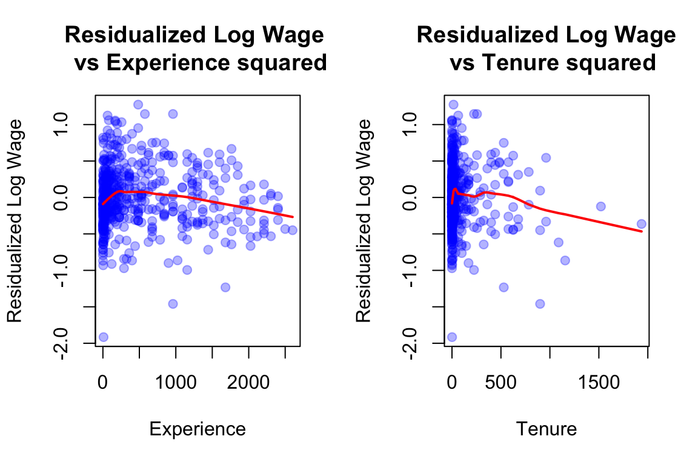

data(lawsch85)model1<-lm(lsalary~GPA+rank , data =lawsch85)model2<-lm(lsalary~GPA+rank+age, data =lawsch85)model3<-lm(lsalary~GPA+rank+clsize, data =lawsch85)stargazer(model1, model2, model3, type ="text", title ="Law School Salary Regressions", dep.var.labels ="Log(Salary)", covariate.labels =c("GPA", "Rank", "Age", "Class Size"), keep.stat =c("n", "rsq", "adj.rsq"))
Interpretations are straightforward. I expect students to specify that these are average effects, all else equal, and being careful on not making causal statements instead specify them as associations.
Inclusion of class size seemingly increases the effect of GPA, while inclusion of age has no discernible effect on the GPA coefficient.
The reason why I say “seemingly” is because the change when eye-balled with the standard errors gives confidence intervals that gives the upper end of model 2’s coefficient’s 95% CI at 0.458 and the lower end of model 3’s coefficient’s 95% CI at 0.2, which overlap. Before making statistical claims, we need to formally test equality of coefficients across models.
Part (b)
Model 2’s R-squared is lower than Model 1’s, despite adding a variable. This happens because there are missing values leading to lower number of observations. You can check this by looking at the number of observations in each model when estimation results are produced, and further clarify by running:
Min. 1st Qu. Median Mean 3rd Qu. Max. NA's
3.00 63.50 85.00 85.82 112.50 206.00 45
which shows 45 missing values of age.
Question 2
Model 1 correctly estimates the effect of minimum wage on employment. Since changes in minimum wages also change average wages in the county, controling for average wages in model 2 would “control away part of the effect of minimum wage on employment. this is similar to the over-controlling problem we discussed in class.
Call:
lm(formula = lwage ~ female, data = wage1)
Residuals:
Min 1Q Median 3Q Max
-2.05123 -0.31774 -0.04889 0.35548 1.65773
Coefficients:
Estimate Std. Error t value Pr(>|t|)
(Intercept) 1.81357 0.02981 60.830 <2e-16 ***
female -0.39722 0.04307 -9.222 <2e-16 ***
---
Signif. codes: 0 '***' 0.001 '**' 0.01 '*' 0.05 '.' 0.1 ' ' 1
Residual standard error: 0.4935 on 524 degrees of freedom
Multiple R-squared: 0.1396, Adjusted R-squared: 0.138
F-statistic: 85.04 on 1 and 524 DF, p-value: < 2.2e-16
On average, female workers earn approximately 39.73% less than male workers. The exact percentage difference is (e^{-0.3972} - 1) \times 100 = -32.8\% accounting for the log transformation.
Part (b)
We don’t include both female and male dummies because of Perfect multicollinearity: female + male = 1 for every observation. So we need to omit one category to avoid this issue. ## Part (c)
model_gender2<-lm(lwage~female+educ+exper+tenure, data =wage1)stargazer(model_gender1, model_gender2, type ="text", title ="Gender Wage Gap Analysis", dep.var.labels ="Log(Wage)", covariate.labels =c("Female", "Education", "Experience", "Tenure"), keep.stat =c("n", "rsq", "adj.rsq"))
The coefficient on female decreases from -0.397 to -0.301 (becomes less negative). But be careful of claiming this statistically. Recall the CI based explanation above.
However, typically in gender gap empirical problems after controlling a bunch of different variables which are expected to differ between gender and also matter for the labor outcomes, one typically observes statistically lower estimates of gender wage gap than raw gender wage gap. This is even more typical of estimate in larger samples which also will give tighter confidence intervals. Part of the raw gender gap are due to differences in: Education levels between genders, Work experience between genders and Job tenure between genders, among other differences. You can read more on this by yourself, but occupational differences account for a majority of the raw gender wage gap, and depending on the country, hours worked and which hours are worked also matter.
Part (d)
model_gender3<-lm(lwage~female+educ+female:educ+exper+tenure, data =wage1)summary(model_gender3)
Call:
lm(formula = lwage ~ female + educ + female:educ + exper + tenure,
data = wage1)
Residuals:
Min 1Q Median 3Q Max
-1.91695 -0.26530 -0.02059 0.25715 1.27586
Coefficients:
Estimate Std. Error t value Pr(>|t|)
(Intercept) 0.464712 0.122892 3.781 0.000174 ***
female -0.210376 0.173969 -1.209 0.227107
educ 0.090276 0.008715 10.359 < 2e-16 ***
exper 0.004642 0.001628 2.850 0.004541 **
tenure 0.017436 0.002981 5.849 8.76e-09 ***
female:educ -0.007245 0.013562 -0.534 0.593456
---
Signif. codes: 0 '***' 0.001 '**' 0.01 '*' 0.05 '.' 0.1 ' ' 1
Residual standard error: 0.4162 on 520 degrees of freedom
Multiple R-squared: 0.3926, Adjusted R-squared: 0.3868
F-statistic: 67.22 on 5 and 520 DF, p-value: < 2.2e-16
We add an interaction term female × educ to allow education returns to vary by gender.
Base education effect (for males): 9.02% return per year
Additional returns for females: -0.7% per year (interaction term) but it is statistically insginifcant (t-stat = - 0.534).
Thus education returns for females cannot be claimed to be statistically different from males
Part (e)
Lets residualize lwage from educexperfemale and tenure to see how the data pattern looks with exper^2 and tenure^2 after expunging variation in lwage from educexperfemale and tenure.
model_resid<-lm(lwage~educ+female+exper+tenure, data =wage1)wage1$residuals<-resid(model_resid)par(mfrow =c(1, 2))plot((wage1$exper)^2, wage1$residuals, main ="Residualized Log Wage \n vs Experience squared", xlab ="Experience", ylab ="Residualized Log Wage", col =rgb(0,0,1,0.3), pch =19)lines(lowess((wage1$exper)^2, wage1$residuals), col ="red", lwd =2)plot((wage1$tenure)^2, wage1$residuals, main ="Residualized Log Wage\n vs Tenure squared", xlab ="Tenure", ylab ="Residualized Log Wage", col =rgb(0,0,1,0.3), pch =19)lines(lowess((wage1$tenure)^2, wage1$residuals), col ="red", lwd =2)

These patterns suggest adding exper² and tenure² diminishing marginal returns to experience and tenure commonly observed in labor economics.. Adding these non-linearities could improve model fit.
Question 4
Zeyi will provide solutions to the Wooldridge problems on Canvas
this is no different from the partialling out analysis we did in class. to see this read the slides on partialling out and the analogous section in Wooldridge chapter 3.
Question 5
Zeyi will provide solutions to the Wooldridge problems on Canvas